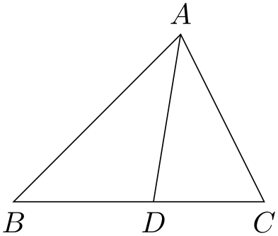
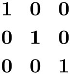
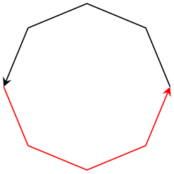

The TikZ and PGF Packages
Manual for version 3.1.10
Mathematical and Object-Oriented Engines
94 Mathematical Expressions¶
The easiest way of using pgf’s mathematical engine is to provide a mathematical expression given in familiar infix notation, for example, 1cm+4*2cm/5.5 or 2*3+3*sin(30). This expression can be parsed by the mathematical engine and the result can be placed in a dimension register, a counter, or a macro. \(\newcommand {\mvar }[1]{#1} \)
It should be noted that all calculations must not exceed \(\pm 16383.99999\) at any point, because the underlying computations rely on TeX dimensions. This means that many of the underlying computations are necessarily approximate and, in addition, not very fast. TeX is, after all, a typesetting language and not ideally suited to relatively advanced mathematical operations. However, it is possible to change the computations as described in Section 96.
In the present section, the high-level macros for parsing an expression are explained first, then the syntax for expression is explained.
94.1 Parsing Expressions¶
94.1.1 Commands¶
The basic command for invoking the parser of pgf’s mathematical engine is the following:
-
\pgfmathparse{⟨expression⟩} ¶
-
• The result stored in the macro \pgfmathresult is a decimal without units. This is true regardless of whether the ⟨expression⟩ contains any unit specification. All numbers with units are converted to points first. See Section 94.1.2 for details on units.
-
• The parser will recognize TeX registers and box dimensions, so \mydimen, 0.5\mydimen, \wd\mybox, 0.5\dp\mybox, \mycount\mydimen and so on can be parsed.
-
• The \(\varepsilon \)-TeX extensions \dimexpr, \numexpr, \glueexpr, and \muexpr are recognized and evaluated. The values they result in will be used in the further evaluation, as if you had put \the before them.
-
• Parenthesis can be used to change the order of the evaluation.
-
• Various functions are recognized, so it is possible to parse sin(.5*pi r)*60, which means “the sine of \(0.5\) times \(\pi \) radians, multiplied by 60”. The argument of functions can be any expression.
-
• Scientific notation in the form 1.234e+4 is recognized (but the restriction on the range of values still applies). The exponent symbol can be upper or lower case (i.e., E or e).
-
• An integer with a zero-prefix (excluding, of course zero itself), is interpreted as an octal number and is automatically converted to base 10.
-
• An integer with prefix 0x or 0X is interpreted as a hexadecimal number and is automatically converted to base 10. Alphabetic digits can be in uppercase or lowercase.
-
• An integer with prefix 0b or 0B is interpreted as a binary number and is automatically converted to base 10.
-
• An expression (or part of an expression) surrounded with double quotes (i.e., the character ") will not be evaluated. Obviously this should be used with great care.
This macro parses ⟨expression⟩ and returns the result without units in the macro \pgfmathresult.
Example: \pgfmathparse{2pt+3.5pt} will set \pgfmathresult to the text 5.5.
In the following, the special properties of this command are explained. The exact syntax of mathematical expressions is explained in Sections 94.2 and 94.3.
-
\pgfmathqparse{⟨expression⟩} ¶
This macro is similar to \pgfmathparse: it parses ⟨expression⟩ and returns the result in the macro \pgfmathresult. It differs in two respects. Firstly, \pgfmathqparse does not parse functions, scientific notation, the prefixes for binary octal, or hexadecimal numbers, nor does it accept the special use of ", ? or : characters. Secondly, numbers in ⟨expression⟩ must specify a TeX unit (except in such instances as 0.5\pgf@x), which greatly simplifies the problem of parsing real numbers. As a result of these restrictions \pgfmathqparse is about twice as fast as \pgfmathparse. Note that the result will still be a number without units.
-
\pgfmathpostparse ¶
At the end of the parse this command is executed, allowing some custom action to be performed on the result of the parse. When this command is executed, the macro \pgfmathresult will hold the result of the parse (as always, without units). The result of the custom action should be used to redefine \pgfmathresult appropriately. By default, this command is equivalent to \relax. This differs from previous versions, where, if the parsed expression contained no units, the result of the parse was scaled according to the value in \pgfmathresultunitscale (which by default was 1).
This scaling can be turned on again using: \let\pgfmathpostparse=\pgfmathscaleresult. Note, however that by scaling the result, the base conversion functions will not work, and the " character should not be used to quote parts of an expression.
Instead of the \pgfmathparse macro you can also use wrapper commands, whose usage is very similar to their cousins in the calc package. The only difference is that the expressions can be any expression that is handled by \pgfmathparse. For all of the following commands, if ⟨expression⟩ starts with +, no parsing is done and a simple assignment or increment is done using normal TeX assignments or increments. This will be orders of magnitude faster than calling the parser.
The effect of the following commands is always local to the current TeX scope.
-
\pgfmathsetlength{⟨register⟩}{⟨expression⟩} ¶
Basically, this command sets the length of the TeX ⟨register⟩ to the value specified by ⟨expression⟩. However, there is some fine print:
First, in case ⟨expression⟩ starts with a +, a simple TeX assignment is done. In particular, ⟨register⟩ can be a glue register and ⟨expression⟩ be something like +1pt plus 1fil and the ⟨register⟩ will be assigned the expected value.
Second, when the ⟨expression⟩ does not start with +, it is first parsed using \pgfmathparse, resulting in a (dimensionless) value \pgfmathresult. Now, if the parser encountered the unit mu somewhere in the expression, it assumes that ⟨register⟩ is a \muskip register and will try to assign to ⟨register⟩ the value \pgfmathresult followed by mu. Otherwise, in case mu was not encountered, it is assumed that ⟨register⟩ is a dimension register or a glue register and we assign \pgfmathresult followed by pt to it.
The net effect of the above is that you can write things like
13.0mu
\muskipdef\mymuskip=0
\pgfmathsetlength{\mymuskip}{1mu+3*4mu} \the\mymuskip
13.0pt
\dimendef\mydimen=0
\pgfmathsetlength{\mydimen}{1pt+3*4pt} \the\mydimen
13.0pt
\skipdef\myskip=0
\pgfmathsetlength{\myskip}{1pt+3*4pt} \the\myskip
One thing that will not work is \pgfmathsetlength{\myskip}{1pt plus 1fil} since the parser does not support fill’s. You can, however, use the + notation in this case:
1.0pt plus 1.0fil
\skipdef\myskip=0
\pgfmathsetlength{\myskip}{+1pt
plus
1fil} \the\myskip
-
\pgfmathaddtolength{⟨register⟩}{⟨expression⟩} ¶
Adds the value of ⟨expression⟩ to the TeX ⟨register⟩. All of the special consideration mentioned for \pgfmathsetlength also apply here in the same way.
-
\pgfmathsetcount{⟨count register⟩}{⟨expression⟩} ¶
Sets the value of the TeX ⟨count register⟩, to the truncated value specified by ⟨expression⟩.
-
\pgfmathaddtocount{⟨count register⟩}{⟨expression⟩} ¶
Adds the truncated value of ⟨expression⟩ to the TeX ⟨count register⟩.
-
\pgfmathsetcounter{⟨counter⟩}{⟨expression⟩} ¶
Sets the value of the LaTeX ⟨counter⟩ to the truncated value specified by ⟨expression⟩.
-
\pgfmathaddtocounter{⟨counter⟩}{⟨expression⟩} ¶
Adds the truncated value of ⟨expression⟩ to ⟨counter⟩.
-
\pgfmathsetmacro{⟨macro⟩}{⟨expression⟩} ¶
Defines ⟨macro⟩ as the value of ⟨expression⟩. The result is a decimal without units.
-
\pgfmathsetlengthmacro{⟨macro⟩}{⟨expression⟩} ¶
Defines ⟨macro⟩ as the value of ⟨expression⟩ in points.
-
\pgfmathtruncatemacro{⟨macro⟩}{⟨expression⟩} ¶
Defines ⟨macro⟩ as the truncated value of ⟨expression⟩.
94.1.2 Considerations Concerning Units¶
As was explained earlier, the parser commands like \pgfmathparse will always return a result without units in it and all dimensions that have a unit like 10pt or 1in will first be converted to TeX points (pt) and, then, the unit is dropped.
Sometimes it is useful, nevertheless, to find out whether an expression or not. For this, you can use the following commands:
-
\ifpgfmathunitsdeclared ¶
After a call of \pgfmathparse this if will be true exactly if some unit was encountered in the expression. It is always set globally in each call.
Note that any “mentioning” of a unit inside an expression will set this TeX-if to true. In particular, even an expressionlike 2pt/1pt, which arguably should be considered “scalar” or “unit-free” will still have this TeX-if set to true. However, see the scalar function for a way to change this.
-
scalar(value)
-
\pgfmathscalar{value} ¶
This function is the identity function on its input, but it will reset the TeX-if \ifpgfmathunitsdeclared. Thus, it can be used to indicate that the given ⟨value⟩ should be considered as a “scalar” even when it contains units; but note that it will work even when the ⟨value⟩ is a string or something else. The only effect of this function is to clear the unit declaration.
0.5 without unit
\pgfmathparse{scalar(1pt/2pt)} \pgfmathresult\
\ifpgfmathunitsdeclared with
\else without
\fi unit
Note, however, that this command (currently) really just clears the TeX-if as the input is scanned from left-to-right. Thus, even if there is a use of a unit before the scalar function is used, the TeX-if will be cleared:
2.0 without unit
\pgfmathparse{1pt+scalar(1pt)} \pgfmathresult\
\ifpgfmathunitsdeclared with
\else without
\fi unit
The other way round, a use of a unit after the scalar function will set the units once more.
2.0 with unit
\pgfmathparse{scalar(1pt)+1pt} \pgfmathresult\
\ifpgfmathunitsdeclared with
\else without
\fi unit
For these reasons, you should use the function only on the outermost level of an expression.
A typical use of this function is the following:

\usetikzlibrary {calc,quotes}
\tikz{
\coordinate["$A$"] (A) at
(2,2);
\coordinate["$B$" below] (B) at
(0,0);
\coordinate["$C$" below] (C) at
(3,0);
\draw (A) --
(B) --
(C) --
cycle;
\path
let
\p1
=($(A)-(B)$), \p2
=($(A)-(C)$),
\n1
=
{veclen(\x1,\y1)}, \n2
=
{veclen(\x2,\y2)}
in
coordinate
["$D$" below] (D) at
($ (B)!scalar(\n1/(\n1+\n2))!(C) $);
\draw (A) --
(D);
}
A special kind of units are TeX’s “math units” (mu). It will be treated as if pt had been used, but you can check whether an expression contained a math unit using the following:
-
\ifpgfmathmathunitsdeclared ¶
This TeX-if is similar to \ifpgfmathunitsdeclared, but it is only set when the unit mu is encountered at least once. In this case, \ifpgfmathunitsdeclared will also be set to true. The scalar function has no effect on this TeX-if.
94.2 Syntax for Mathematical Expressions: Operators¶
The syntax for the expressions recognized by \pgfmathparse and friends is rather straightforward. Let us start with the operators.
The following operators (presented in the context in which they are used) are recognized:
-
x + y (infix operator; uses the add function)
Adds x to y.
-
x - y (infix operator; uses the subtract function)
Subtracts y from x.
-
-x (prefix operator; uses the neg function)
Reverses the sign of x.
-
x * y (infix operator; uses the multiply function)
Multiplies x by y.
-
x / y (infix operator; uses the divide function)
Divides x by y. An error will result if y is 0, or if the result of the division is too big for the mathematical engine. Please remember when using this command that accurate (and reasonably quick) division of real numbers that are not integers is particularly tricky in TeX.
-
x ^ y (infix operator; uses the pow function)
Raises x to the power y.
-
x! (postfix operator; uses the factorial function)
Calculates the factorial of x.
-
xr (postfix operator; uses the deg function)
Converts x to degrees (x is assumed to be in radians). This operator has the same precedence as multiplication.
-
x ? y : z (conditional operators; use the ifthenelse function)
? and : are special operators which can be used as a shorthand for if x then y else z inside the parser. The expression x is taken to be true if it evaluates to any non-zero value.
-
x == y (infix operator; uses the equal function)
Returns 1 if x\(=\)y, 0 otherwise.
-
x > y (infix operator; uses the greater function)
Returns 1 if x\(>\)y, 0 otherwise.
-
x < y (infix operator; uses the less function)
Returns 1 if x\(<\)y, 0 otherwise.
-
x != y (infix operator; uses the notequal function)
Returns 1 if x\(\neq \)y, 0 otherwise.
-
x >= y (infix operator; uses the notless function)
Returns 1 if x\(\geq \)y, 0 otherwise.
-
x <= y (infix operator; uses the notgreater function)
Returns 1 if x\(\leq \)y, 0 otherwise.
-
x && y (infix operator; uses the and function)
Returns 1 if both x and y evaluate to some non-zero value. Both arguments are evaluated.
-
x || y (infix operator; uses the or function)
Returns 1 if either x or y evaluate to some non-zero value.
-
!x (prefix operator; uses the not function)
Returns 1 if x evaluates to zero, 0 otherwise.
-
(x) (group operators)
These operators act in the usual way, that is, to control the order in which operators are executed, for example, (1+2)*3. This includes the grouping of arguments for functions, for example, sin(30*10) or mod(72,3) (the comma character is also treated as an operator).
Parentheses for functions with one argument are not always necessary, sin 30 (note the space) is the same as sin(30). However, functions have the highest precedence so, sin 30*10 is the same as sin(30)*10.
-
{x} (array operators)
These operators are used to process array-like structures (within an expression these characters do not act like TeX grouping tokens). The ⟨array specification⟩ consists of comma separated elements, for example, {1, 2, 3, 4, 5}. Each element in the array will be evaluated as it is parsed, so expressions can be used. In addition, an element of an array can be an array itself, allowing multiple dimension arrays to be simulated: {1, {2,3}, {4,5}, 6}. When storing an array in a macro, do not forget the surrounding braces: \def\myarray{{1,2,3}} not \def\myarray{1,2,3}.
1, two, 3.0, IV, cinq, sechs, 7.0,
\def\myarray{{1,"two",2+1,"IV","cinq","sechs",sin(\i*5)*14}}
\foreach \i in
{0,...,6}{\pgfmathparse{\myarray[\i]}\pgfmathresult, }
-
[x] (array access operators; use the array function)
[ and ] are two operators used in one particular circumstance: to access an array (specified using the { and } operators) using the index x. Indexing starts from zero, so, if the index is greater than, or equal to, the number of values in the array, an error will occur, and zero will be returned.
-9.0
\def\myarray{{7,-3,4,-9,11}}
\pgfmathparse{\myarray[3]} \pgfmathresult
If the array is defined to have multiple dimensions, then the array access operators can be immediately repeated.

-
"x" (group operators)
These operators are used to quote x. However, as every expression is expanded with \edef before it is parsed, macros (e.g., font commands like \tt or \Huge) may need to be “protected” from this expansion (e.g., \noexpand\Huge). Ideally, you should avoid such macros anyway. Obviously, these operators should be used with great care as further calculations are unlikely to be possible with the result.
94.3 Syntax for Mathematical Expressions: Functions¶
The following functions are recognized:
-
• abs, acos, add, and, array, asin, atan, atan2, bin, ceil, cos, cosec, cosh, cot, deg, depth, dim, div, divide, e, equal, factorial, false, floor, frac, gcd, greater, height, hex, Hex, int, ifthenelse, iseven, isodd, isprime, less, ln, log10, log2, max, min, mod, Mod, multiply, neg, not, notequal, notgreater, notless, oct, or, pi, pow, rad, rand, random, real, rnd, round, scalar, sec, sign, sin, sinh, sqrt, subtract, tan, tanh, true, veclen, width
Each function has a pgf command associated with it (which is also shown with the function below). In general, the command is simply the name of the function prefixed with \pgfmath, for example, \pgfmathadd, but there are some notable exceptions.
94.3.1 Basic arithmetic functions¶
-
add(x,y)
-
\pgfmathadd{x}{y} ¶
Adds \(x\) and \(y\).
81.0
\pgfmathparse{add(75,6)} \pgfmathresult
-
subtract(x,y)
-
\pgfmathsubtract{x}{y} ¶
Subtract \(y\) from \(x\).
69.0
\pgfmathparse{subtract(75,6)} \pgfmathresult
-
neg(x)
-
\pgfmathneg{x} ¶
This returns \(-x\).
-50.0
\pgfmathparse{neg(50)} \pgfmathresult
-
multiply(x,y)
-
\pgfmathmultiply{x}{y} ¶
Multiply \(x\) by \(y\).
450.0
\pgfmathparse{multiply(75,6)} \pgfmathresult
-
divide(x,y)
-
\pgfmathdivide{x}{y} ¶
Divide \(x\) by \(y\).
12.5
\pgfmathparse{divide(75,6)} \pgfmathresult
-
div(x,y)
-
\pgfmathdiv{x}{y} ¶
Divide \(x\) by \(y\) and return the integer part of the result.
8
\pgfmathparse{div(75,9)} \pgfmathresult
-
factorial(x)
-
\pgfmathfactorial{x} ¶
Return x!.
120.0
\pgfmathparse{factorial(5)} \pgfmathresult
-
sqrt(x)
-
\pgfmathsqrt{x} ¶
Calculates \(\sqrt {x}\).
3.16227
\pgfmathparse{sqrt(10)} \pgfmathresult
93.62388
\pgfmathparse{sqrt(8765.432)} \pgfmathresult
-
pow(x,y)
-
\pgfmathpow{x}{y} ¶
Raises x to the power y. For greatest accuracy, y should be an integer. If y is not an integer, the actual calculation will be an approximation of \(e^{y \ln (x)}\).
128.0
\pgfmathparse{pow(2,7)} \pgfmathresult
-
e
-
\pgfmathe ¶
Returns the value 2.718281828.
3.62685
\pgfmathparse{(e^2-e^-2)/2} \pgfmathresult
-
exp(x)
-
\pgfmathexp{x} ¶
Maclaurin series for \(e^x\).
2.71825
\pgfmathparse{exp(1)} \pgfmathresult
10.38083
\pgfmathparse{exp(2.34)} \pgfmathresult
-
ln(x)
-
\pgfmathln{x} ¶
An approximation for \(\ln (x)\). This uses an algorithm of Rouben Rostamian, and coefficients suggested by Alain Matthes.
2.30257
\pgfmathparse{ln(10)} \pgfmathresult
4.99997
\pgfmathparse{ln(exp(5))} \pgfmathresult
-
log10(x)
-
\pgfmathlogten{x} ¶
An approximation for \(\log _{10}(x)\).
1.99997
\pgfmathparse{log10(100)} \pgfmathresult
-
log2(x)
-
\pgfmathlogtwo{x} ¶
An approximation for \(\log _2(x)\).
6.99994
\pgfmathparse{log2(128)} \pgfmathresult
-
abs(x)
-
\pgfmathabs{x} ¶
Evaluates the absolute value of \(x\).
5.0
\pgfmathparse{abs(-5)} \pgfmathresult
-12.0
\pgfmathparse{-abs(4*-3)} \pgfmathresult
-
mod(x,y)
-
\pgfmathmod{x}{y} ¶
This evaluates x modulo y, using truncated division. The sign of the result is the same as the sign of \(\frac {x}{y}\).
2.0
\pgfmathparse{mod(20,6)} \pgfmathresult
-10.0
\pgfmathparse{mod(-100,30)} \pgfmathresult
-
Mod(x,y)
-
\pgfmathMod{x}{y} ¶
This evaluates x modulo y, using floored division. The sign of the result is never negative.
20.0
\pgfmathparse{Mod(-100,30)} \pgfmathresult
-
sign(x)
-
\pgfmathsign{x} ¶
Returns the sign of \(x\).
-1
\pgfmathparse{sign(-5)} \pgfmathresult
0
\pgfmathparse{sign(0)} \pgfmathresult
1
\pgfmathparse{sign(5)} \pgfmathresult
94.3.2 Rounding functions¶
-
round(x)
-
\pgfmathround{x} ¶
Rounds x to the nearest integer. It uses “asymmetric half-up” rounding. So 1.5 is rounded to 2, but -1.5 is rounded to -2 (not -1).
2.0
\pgfmathparse{round(32.5/17)} \pgfmathresult
33.0
\pgfmathparse{round(398/12)} \pgfmathresult
-
floor(x)
-
\pgfmathfloor{x} ¶
Rounds x down to the nearest integer.
1.0
\pgfmathparse{floor(32.5/17)} \pgfmathresult
33.0
\pgfmathparse{floor(398/12)} \pgfmathresult
-34.0
\pgfmathparse{floor(-398/12)} \pgfmathresult
-
ceil(x)
-
\pgfmathceil{x} ¶
Rounds x up to the nearest integer.
2.0
\pgfmathparse{ceil(32.5/17)} \pgfmathresult
34.0
\pgfmathparse{ceil(398/12)} \pgfmathresult
-33.0
\pgfmathparse{ceil(-398/12)} \pgfmathresult
-
int(x)
-
\pgfmathint{x} ¶
Returns the integer part of x.
1
\pgfmathparse{int(32.5/17)} \pgfmathresult
-
frac(x)
-
\pgfmathfrac{x} ¶
Returns the fractional part of x.
0.91176
\pgfmathparse{frac(32.5/17)} \pgfmathresult
-
real(x)
-
\pgfmathreal{x} ¶
Ensures x contains a decimal point.
4.0
\pgfmathparse{real(4)} \pgfmathresult
94.3.3 Integer arithmetic functions¶
-
gcd(x,y)
-
\pgfmathgcd{x}{y} ¶
Computes the greatest common divider of x and y.
14
\pgfmathparse{gcd(42,56)} \pgfmathresult
-
isodd(x)
-
\pgfmathisodd{x} ¶
Returns 1 if the integer part of x is odd. Otherwise, returns 0.
0,1
\pgfmathparse{isodd(2)} \pgfmathresult,
\pgfmathparse{isodd(3)} \pgfmathresult
-
iseven(x)
-
\pgfmathiseven{x} ¶
Returns 1 if the integer part of x is even. Otherwise, returns 0.
1,0
\pgfmathparse{iseven(2)} \pgfmathresult,
\pgfmathparse{iseven(3)} \pgfmathresult
-
isprime(x)
-
\pgfmathisprime{x} ¶
Returns 1 if the integer part of x is prime. Otherwise, returns 0.
0,1,1,0
\pgfmathparse{isprime(1)} \pgfmathresult,
\pgfmathparse{isprime(2)} \pgfmathresult,
\pgfmathparse{isprime(31)} \pgfmathresult,
\pgfmathparse{isprime(64)} \pgfmathresult
94.3.4 Trigonometric functions¶
-
pi
-
\pgfmathpi ¶
Returns the value \(\pi =3.141592654\).
3.141592654
\pgfmathparse{pi} \pgfmathresult
179.99962
\pgfmathparse{pi
r} \pgfmathresult
-
rad(x)
-
\pgfmathrad{x} ¶
Convert x to radians. x is assumed to be in degrees.
1.57079
\pgfmathparse{rad(90)} \pgfmathresult
-
deg(x)
-
\pgfmathdeg{x} ¶
Convert x to degrees. x is assumed to be in radians.
269.999
\pgfmathparse{deg(3*pi/2)} \pgfmathresult
-
sin(x)
-
\pgfmathsin{x} ¶
Sine of x. By employing the r operator, x can be in radians.
0.86603
\pgfmathparse{sin(60)} \pgfmathresult
0.86601
\pgfmathparse{sin(pi/3 r)} \pgfmathresult
-
cos(x)
-
\pgfmathcos{x} ¶
Cosine of x. By employing the r operator, x can be in radians.
0.5
\pgfmathparse{cos(60)} \pgfmathresult
0.49998
\pgfmathparse{cos(pi/3 r)} \pgfmathresult
-
tan(x)
-
\pgfmathtan{x} ¶
Tangent of x. By employing the r operator, x can be in radians.
1.00005
\pgfmathparse{tan(45)} \pgfmathresult
1.0
\pgfmathparse{tan(2*pi/8 r)} \pgfmathresult
-
sec(x)
-
\pgfmathsec{x} ¶
Secant of x. By employing the r operator, x can be in radians.
1.41429
\pgfmathparse{sec(45)} \pgfmathresult
-
cosec(x)
-
\pgfmathcosec{x} ¶
Cosecant of x. By employing the r operator, x can be in radians.
2.0
\pgfmathparse{cosec(30)} \pgfmathresult
-
cot(x)
-
\pgfmathcot{x} ¶
Cotangent of x. By employing the r operator, x can be in radians.
3.73215
\pgfmathparse{cot(15)} \pgfmathresult
-
asin(x)
-
\pgfmathasin{x} ¶
Arcsine of x. The result is in degrees and in the range \(\pm 90^\circ \).
44.99945
\pgfmathparse{asin(0.7071)} \pgfmathresult
-
acos(x)
-
\pgfmathacos{x} ¶
Arccosine of x in degrees. The result is in the range \([0^\circ ,180^\circ ]\).
60.0
\pgfmathparse{acos(0.5)} \pgfmathresult
-
atan(x)
-
\pgfmathatan{x} ¶
Arctangent of \(x\) in degrees.
45.0
\pgfmathparse{atan(1)} \pgfmathresult
-
atan2(y,x)
-
\pgfmathatantwo{y}{x} ¶
Arctangent of \(y\div x\) in degrees. This also takes into account the quadrants.
-53.13011
\pgfmathparse{atan2(-4,3)} \pgfmathresult
-
/pgf/trig format=deg|rad (no default, initially deg) ¶
Allows to define whether trigonometric math functions (i.e. all in this subsection) operate with degrees or with radians.
0.7071
\pgfmathparse{cos(45)} \pgfmathresult
0.0
\pgfkeys{/pgf/trig format=rad}
\pgfmathparse{cos(pi/2)} \pgfmathresult
The initial configuration trig format=deg is the base of pgf: almost all of it is based on degrees.
Specifying trig format=rad is most useful for data visualization where the angles are typically given in radians. However, it is applied to all trigonometric functions for which the option applies, including any drawing instructions which operate on angles.

\begin{tikzpicture}
\draw[-stealth]
(0:1) --
(45:1) --
(90:1) --
(135:1) --
(180:1);
\draw[-stealth,trig format=rad,red]
(pi:1) --
(5/4*pi:1) --
(6/4*pi:1) --
(7/4*pi:1) --
(2*pi:1);
\end{tikzpicture}
Warning: At the time of this writing, this feature is “experimental”. Please handle it with care: there may be path instructions or libraries in pgf which rely on trig format=deg. The intended usage of trig format=rad is for local scopes – and as option for data visualization.
94.3.5 Comparison and logical functions¶
-
equal(x,y)
-
\pgfmathequal{x}{y} ¶
This returns 1 if \(x=y\) and 0 otherwise.
1
\pgfmathparse{equal(20,20)} \pgfmathresult
-
greater(x,y)
-
\pgfmathgreater{x}{y} ¶
This returns 1 if \(\mvar {x}>\mvar {y}\) and 0 otherwise.
0
\pgfmathparse{greater(20,25)} \pgfmathresult
-
less(x,y)
-
\pgfmathless{x}{y} ¶
This returns 1 if \(x<\mvar {y}\) and 0 otherwise.
1
\pgfmathparse{less(20,25)} \pgfmathresult
-
notequal(x,y)
-
\pgfmathnotequal{x}{y} ¶
This returns 0 if \(x=\mvar {y}\) and 1 otherwise.
1
\pgfmathparse{notequal(20,25)} \pgfmathresult
-
notgreater(x,y)
-
\pgfmathnotgreater{x}{y} ¶
This returns 1 if \(x\leq \mvar {y}\) and 0 otherwise.
1
\pgfmathparse{notgreater(20,25)} \pgfmathresult
-
notless(x,y)
-
\pgfmathnotless{x}{y} ¶
This returns 1 if \(x\geq \mvar {y}\) and 0 otherwise.
0
\pgfmathparse{notless(20,25)} \pgfmathresult
-
and(x,y)
-
\pgfmathand{x}{y} ¶
This returns 1 if x and y both evaluate to non-zero values. Otherwise 0 is returned.
0
\pgfmathparse{and(5>4,6>7)} \pgfmathresult
-
or(x,y)
-
\pgfmathor{x}{y} ¶
This returns 1 if either x or y evaluate to non-zero values. Otherwise 0 is returned.
1
\pgfmathparse{or(5>4,6>7)} \pgfmathresult
-
not(x)
-
\pgfmathnot{x} ¶
This returns 1 if \(\mvar {x}=0\), otherwise 0.
0
\pgfmathparse{not(true)} \pgfmathresult
-
ifthenelse(x,y,z)
-
\pgfmathifthenelse{x}{y}{z} ¶
This returns y if x evaluates to some non-zero value, otherwise z is returned.
no
\pgfmathparse{ifthenelse(5==4,"yes","no")} \pgfmathresult
-
true
-
\pgfmathtrue ¶
This evaluates to 1.
yes
\pgfmathparse{true
?
"yes"
:
"no"} \pgfmathresult
-
false
-
\pgfmathfalse ¶
This evaluates to 0.
no
\pgfmathparse{false
?
"yes"
:
"no"} \pgfmathresult
94.3.6 Pseudo-random functions¶
-
rnd
-
\pgfmathrnd ¶
Generates a pseudo-random number between \(0\) and \(1\) with a uniform distribution.
0.69621, 0.10826, 0.8601, 0.21024, 0.60327, 0.39178, 0.697, 0.26112, 0.38905, 0.69016,
\foreach \x in
{1,...,10}{\pgfmathparse{rnd}\pgfmathresult, }
-
rand
-
\pgfmathrand ¶
Generates a pseudo-random number between \(-1\) and \(1\) with a uniform distribution.
-0.30379, 0.13586, 0.91423, 0.2203, -0.30508, -0.54727, -0.2593, -0.69032, 0.47404, -0.2289,
\foreach \x in
{1,...,10}{\pgfmathparse{rand}\pgfmathresult, }
-
random(x,y)
-
\pgfmathrandom{x,y} ¶
This function takes zero, one or two arguments. If there are zero arguments, a uniform random number between \(0\) and \(1\) is generated. If there is one argument x, a random integer between \(1\) and x is generated. Finally, if there are two arguments, a random integer between x and y is generated. If there are no arguments, the pgf command should be called as follows: \pgfmathrandom{}.
0.69621, 0.10826, 0.8601, 0.21024, 0.60327, 0.39178, 0.697, 0.26112, 0.38905, 0.69016,
\foreach \x in
{1,...,10}{\pgfmathparse{random()}\pgfmathresult, }
22, 48, 35, 38, 56, 69, 42, 23, 3, 8,
\foreach \x in
{1,...,10}{\pgfmathparse{random(100)}\pgfmathresult, }
292, 302, 294, 460, 699, 385, 635, 602, 708, 408,
\foreach \x in
{1,...,10}{\pgfmathparse{random(232,762)}\pgfmathresult, }
94.3.7 Base conversion functions¶
-
hex(x)
-
\pgfmathhex{x} ¶
Convert x (assumed to be an integer in base 10) to a hexadecimal representation, using lower case alphabetic digits. No further calculation will be possible with the result.
ffff
\pgfmathparse{hex(65535)} \pgfmathresult
-
Hex(x)
-
\pgfmathHex{x} ¶
Convert x (assumed to be an integer in base 10) to a hexadecimal representation, using upper case alphabetic digits. No further calculation will be possible with the result.
FFFF
\pgfmathparse{Hex(65535)} \pgfmathresult
-
oct(x)
-
\pgfmathoct{x} ¶
Convert x (assumed to be an integer in base 10) to an octal representation. No further calculation should be attempted with the result, as the parser can only process numbers converted to base 10.
77
\pgfmathparse{oct(63)} \pgfmathresult
-
bin(x)
-
\pgfmathbin{x} ¶
Convert x (assumed to be an integer in base 10) to a binary representation. No further calculation should be attempted with the result, as the parser can only process numbers converted to base 10.
10111001
\pgfmathparse{bin(185)} \pgfmathresult
94.3.8 Miscellaneous functions¶
-
min(x\(_1\),x\(_2\),…,x\(_n\))
-
\pgfmathmin{x\(_1\),x\(_2\),…}{…,x\(_{n-1}\),x\(_n\)} ¶
Return the minimum value from x\(_1\)…x\(_n\). For historical reasons, the command \pgfmathmin takes two arguments, but each of these can contain an arbitrary number of comma separated values.
-8.0
\pgfmathparse{min(3,4,-2,250,-8,100)} \pgfmathresult
-
max(x\(_1\),x\(_2\),…,x\(_n\))
-
\pgfmathmax{x\(_1\),x\(_2\),…}{…,x\(_{n-1}\),x\(_n\)} ¶
Return the maximum value from x\(_1\)…x\(_n\). Again, for historical reasons, the command \pgfmathmax takes two arguments, but each of these can contain an arbitrary number of comma separated values.
250.0
\pgfmathparse{max(3,4,-2,250,-8,100)} \pgfmathresult
-
veclen(x,y)
-
\pgfmathveclen{x}{y} ¶
Calculates \(\sqrt {\left (\mvar {x}^2+\mvar {y}^2\right )}\). This uses a polynomial approximation, based on ideas of Rouben Rostamian
12.99976
\pgfmathparse{veclen(12,5)} \pgfmathresult
-
array(x,y)
-
\pgfmatharray{x}{y} ¶
This accesses the array x at the index y. The array must begin and end with braces (e.g., {1,2,3,4}) and array indexing starts at 0.
17
\pgfmathparse{array({9,13,17,21},2)} \pgfmathresult
-
dim(x)
-
\pgfmathdim{x} ¶
This returns the dimension of the array x. The array must begin and end with braces (e.g., {1,2,3,4}).
4
\pgfmathparse{dim({1,2,3,4})} \pgfmathresult
The following hyperbolic functions were adapted from code suggested by Martin Heller:
-
sinh(x)
-
\pgfmathsinh{x} ¶
The hyperbolic sine of x
0.52103
\pgfmathparse{sinh(0.5)} \pgfmathresult
-
cosh(x)
-
\pgfmathcosh{x} ¶
The hyperbolic cosine of x
1.12767
\pgfmathparse{cosh(0.5)} \pgfmathresult
-
tanh(x)
-
\pgfmathtanh{x} ¶
The hyperbolic tangent of x
0.462
\pgfmathparse{tanh(0.5)} \pgfmathresult
-
width("x")
-
\pgfmathwidth{"x"} ¶
Return the width of a TeX (horizontal) box containing x. The quote characters are necessary to prevent x from being parsed. It is important to remember that any expression is expanded with \edef before being parsed, so any macros (e.g., font commands like \tt or \Huge) will need to be “protected” (e.g., \noexpand\Huge is usually sufficient).
76.80803
\pgfmathparse{width("Some Lovely Text")} \pgfmathresult
Note that results of this method are provided in points.
-
height("x")
-
\pgfmathheight{"x"} ¶
Return the height of a box containing x.
5.6
\pgfmathparse{height("Some Lovely Text")} \pgfmathresult
-
depth("x")
-
\pgfmathdepth{"x"} ¶
Returns the depth of a box containing x.
1.608
\pgfmathparse{depth("Some Lovely Text")} \pgfmathresult